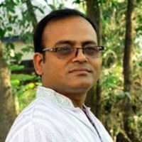
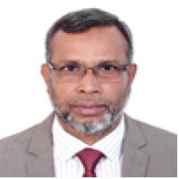
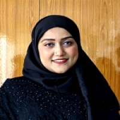

Md. Fazlul Karim Patwary
Md. Fazlul Karim Patwary is a Professor at the IIT, JU where he has been a faculty member since 1999. He earned an M.Sc. in Statistical Bioinformatics from Hasselt University, Belgium, in 2012, and an M.Sc. in Statistics and an MBA in Accounting and Information Systems from JU in 1992 and 2022, respectively. His research interests include Big Data, Data Science, Machine Learning, and Statistical Modelling.

Dr. M. Mesbahuddin Sarker
Dr. M. Mesbahuddin Sarker is a Professor and former Director at IIT, JU. He earned his B.Sc. and M.Sc. degrees from the Maths Department at JU, and an M.Sc. in Communication Systems from the Technical University of Kaiserslautern, Germany. He completed his Ph.D. in Algorithms from JU. Since 2005, he has written columns on IT and education in daily newspapers. His research interests are Databases, AI, IoT, Media & Communication, and Digitization.

Dr. M. Shamim Kaiser
Dr. M. Shamim Kaiser is a Professor at the Institute of IIT, JU, Bangladesh. He holds a Ph.D. in Telecommunication Engineering from the Asian Institute of Technology, Thailand. His research interests include Data Analytics, Machine Learning, Wireless Networks, Cognitive Radio, Big IoT Data, Healthcare, Neuroinformatics, and Cyber Security. He has authored over 150 papers and is an active member of IEEE and other professional societies.

Mohammad Abu Yousuf, PhD, Vice Chancellor, Gazipur Digital University
Dr. Mohammad Abu Yousuf holds a B.Sc. in Computer Science from SUST, an M.Eng. in Biomedical Engineering from Kyung Hee University, and a Ph.D. from Saitama University. He began as a Lecturer at Mawlana Bhashani Science and Technology University in 2003 and joined JU in 2014. He is now a Professor at the IIT. His research includes Computer Vision, Human-Robot Interaction, Medical Image Processing, and Natural Language Processing.

Dr. Risala Tasin Khan
Dr. Risala Tasin Khan is a Professor at the IIT, JU, where she has been working since 2009 and became a professor in 2020. She earned her B.Sc. and M.Sc. in CSE from JU and completed her Ph.D. in 2019. Her research focuses on improving cognitive radio networks, resource allocation using machine learning, and IoT security. She has authored over 30 research papers and supervised 70+ students. She is a senior IEEE member as well.

Dr. Jesmin Akhter
Dr. Jesmin Akhter is a Professor at the IIT, JU. She earned her Ph.D. in 2019 in the field of 4G wireless networks from the Department of CSE at the same university, where she also completed her M.Sc. in 2012 and B.Sc. in 2004. A faculty member since 2008, her current research focuses on IoT, network traffic, complexity and algorithms, and software engineering. She is dedicated to merging innovative ideas in software and telecommunication systems

Professor K M Akkas Ali
Mr. K M Akkas Ali, a Professor at the IIT, JU, served as its Director from 2015 to 2018. With degrees in Computer Science, his research focuses on Blockchain Technology, Cryptography, Network Security, and Cyber Law. He has published 16 articles and 5 books. In addition to teaching at IIT, he conducts IT classes at other universities and serves as Provost of Begum Sufiya Kamal Hall, a major female dormitory at JU

Fahima Tabassum, Ph.D
Dr. Fahima Tabassum is a Professor at the IIT, JU. She completed her B.Sc. (Hons.) in 2003 and M.Sc. in 2010, both from the Department of Computer Science and Engineering at Jahangirnagar University. In 2023, she earned her Ph.D. in Image Processing under the supervision of Professor Dr. Md Imdadul Islam. Her research interests include Image Processing, Telecommunication, and System Analysis & Development.

Dr. Shamim Al Mamun
Professor Shamim Al Mamun is a leading computer scientist with autonomous systems, AI, and software engineering expertise. He earned his B.Sc. from JU, M.Sc. from BUET, and PhD from Saitama University, Japan. His work has greatly impacted computer science with over 60 publications and 1,000+ citations. A founding member of the IEEE CS-Bangladesh Chapter, his research focuses on Computer Vision for Health, Machine Learning, and Web Engineering.

Dr. Mohammad Shahidul Islam
Dr. Shahidul Islam is a Professor at the Institute of IIT, JU. He holds a Ph.D. in Computer Science & Information Systems from NIDA, Bangkok. in Computer Science from IIT-Roorkee, and an M.Sc. in Mobile Computing from the University of Greenwich. His research focuses on Artificial Intelligence, Robotics, Machine Learning, Pattern Recognition, and Renewable Energy, all targeting improvements in agriculture and the environment in Bangladesh.

Dr. Md. Sazzadur Rahman
Dr. Md. Sazzadur Rahman is a Professor at the IIT, JU, since September 2023. He previously served as an Associate and Assistant Professor at the same institute. He earned his Ph.D. in Material Science from Kyushu University, Japan, and his B.Sc. and M.Sc. in Applied Physics from the University of Dhaka. With 14+ years of experience, his research focuses on IoT, Machine Learning, Material Science, Communication Engineering, and Electronics.

RASHED MAZUMDER, Ph.D
Rashed Mazumder earned his B.Sc. in Computer Science from DU and his M.Sc. and Ph.D. from Japan Advanced Institute of Science and Technology. He is certified in CCNA, MCITP, MCSA, & MCP. He has served as a faculty member at Asian University, Peoples University, and Mawlana Bhashani Science and Technology University, where he is now an Associate Professor. His research interests include Information Security, Cryptography, and Advanced Networking.

Mehrin Anannya
Mehrin Anannya is an Assistant Professor at the IIIT, JU. She earned her Master's and Bachelor's degrees in IT from the same institute in 2016 and 2014, respectively. Mehrin consistently received scholarships for academic excellence and was awarded a Bangladesh Government scholarship for a three-month internship at Infosys, India, in 2015. Her research interests include Machine Learning, Cybersecurity, Software Engineering, and IoT.

Md. Biplob Hosen
Md. Biplob Hosen is an Assistant Professor at the IIT, JU. He earned his B.Sc. and M.Sc. degrees in Information Technology from the same institute in 2016 and 2017. He previously lectured at Daffodil International University and Stamford University Bangladesh before joining JU on February 28, 2021. His research interests include Multimodal Machine Learning, Image Processing, Health Informatics, NLP, and Cybersecurity.
Md. Mahmudur Rahman
Md. Mahmudur Rahman is a Lecturer at the IIT, JU. He earned his BSc and MSc degrees in IT from the same institute in 2016 and 2017. Before, he taught at Bangabandhu Sheikh Mujibur Rahman Aviation and Aerospace University, UITS, and the University of South Asia. In 2019, he received the NST fellowship. His research interests include Machine Learning, Medical Image Processing, Intrusion Prevention Systems, Network Security, and Data Mining.

Afrin Ahmed
Afrin Ahmed is a Lecturer at the IIT, JU. She earned her Bachelor’s and Master’s degrees in IT from the same institute in 2018 and 2019. Before joining JU, she taught at BUP and Prime University. In 2021, she received an ICT fellowship from the Ministry of Information and Communication Technology for her master’s research. Her research interests include Machine Learning, Natural Language Processing, and Data Mining.